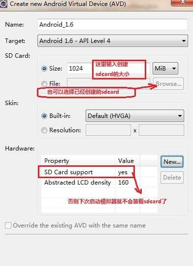
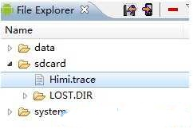
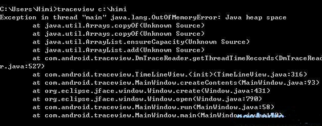
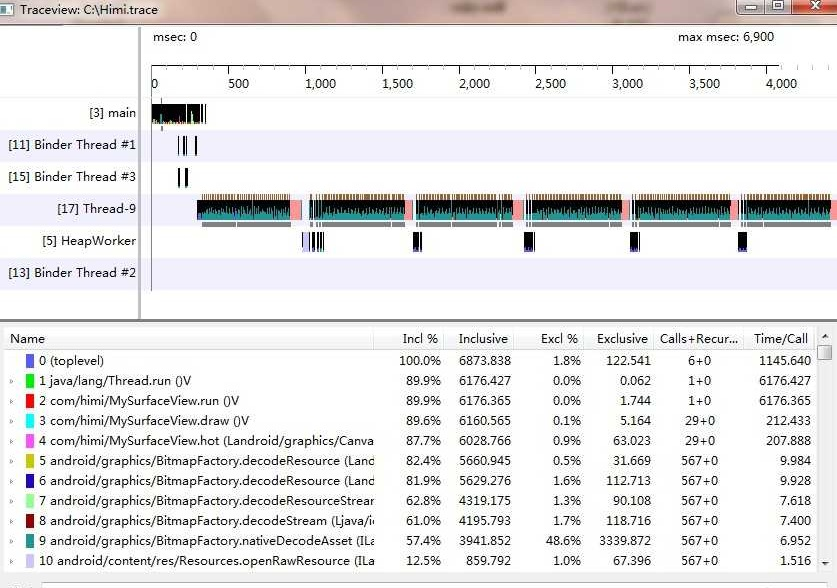

【Android2D游戏开发之十】详细剖析Android Traceview效率检视工具
由于本人现在在一家专职做网游的公司，所以现在需要使用一些方法对现运营的网游代码进行精简和优化，那么就要使用到Android sdk中提供的一款很好的检视工具—Android TraceView、下面先给出对此的解释：然后讲解实现的详细步骤和需要特别注意的一点！
什么是TraceView？先看下百度出来的解释吧：
Traceview是android平台配备一个很好的性能分析的工具。它可以通过图形化的方式让我们了解我们要跟踪的程序的性能，并且能具体到method。
关于Traceview的使用
首先，必须在程序当中加入代码，以便生成trace文件，有了这个trace文件才可以将其转化为图形。
要添加的代码如下：
// start tracing to "/sdcard/yourActivityTrace.trace"Debug.startMethodTracing("yourActivityTrace");
// ... // stop tracing Debug.stopMethodTracing();
// start tracing to "/sdcard/yourActivityTrace.trace" Debug.startMethodTracing("yourActivityTrace");
// ... // stop tracing Debug.stopMethodTracing();
Google Dev Guide当中说可以在activity的onCreate()中添加Debug.startMethodTracing(), 而在onDestroy()中添加Debug.stopMethodTracing()，但是在实际的测试时发现这种方式其实并不好用，因为通常情况下我们的activity的onDestroy()是由系统决定何时调用的，因此可能等了很长时间都不会得到这个trace文件。因此决定在onStop()中来调用Debug.stopMethodTracing()。这样当我们切换到其它activity或者点击home键的时候onStop()就会被调用，我们也就可以得到完整的trace file。
在运行程序之前，首先要保证我们的AVD是一个带有SD card的AVD，这样才能使trace文件保存到/sdcard/...当中。运行后可以任意做一些操作，然后点击home键。这是通过DDMS file explore就可以看到/sdcard/目录下有一个trace文件，现在把这个文件copy到电脑上指定的目录，假设是C:\tracefile 目录下。
可以通过命令行来执行traceview，进入tools目录后，执行
traceview C:\tracefile\yourActivityTrace.trace
之后就可以看到图形了，接下来就是按照Google Dev Guide中的解释去分析图形就OK了。
下面来看如何实现以及需要注意的地方：
实现的步骤分为三步：1.必须先在我们的模拟器中创建sdCard ；2.将我们的调试代码嵌入工程；3.利用TraceView来观察和分析代码情况;
1.对于创建模拟器的sdCard这里写出两种方式：
第一种：我们在eclipse中创建avd的时候的时候 在选择api下面有个 Sd Card 的选项，第一项填入创建sdcard的大小即可。

第二种：cmd 命令！ 打开cmd 并且cd 到android sdk tool 路径下；（或者在环境变量Path中将sdk tool路径配置上，然后重新打开cmd）
使用 mksdcard -l mycard 1024M F:\mysdcard.img 创建了一个1G的sdcard；
使用 emulator -avd my_android -sdcard F:\mysdcard.img 激活sdcard!
最后在eclipse Preferences-->Android-->Launch加入 -sdcard F:\mysdcard.img （此步骤就是在第一种创建方式中添加sdcard的支持）
备注1：
如果sdcard分配的空间太小，则程序追踪文件就一直记录到sd储蓄卡容量慢为止，所以调试前，要为程序生成一个适当的SD存储卡也较为重要,因为程序运行时间越长，这个追踪文件也就越大。
备注2;
(如果第二种创建方式中的第二部激活出现 emulator: ERROR: the user data image is used by another emulator. aborting，请关闭模拟器，或者进入目录： /Documents and Settings / 用户 / .android /的AVD / *设备* / (比如我的目录是：C:\Documents and Settings\Administrator\.android\avd\android2.0.avd)
然后删去以.lock结尾的文件夹就行(我简单解释下为什么要删除这些文件呢，其实.lock是加锁，如果程序崩溃等原因导致无法清除这些以.lock结尾的文件夹，就会出现这个问题，也就是这个avd的锁没有被释放，导致avd manager以为这个avd正在使用当中。))
2.将我们的调试代码嵌入工程
正如我们百度到的说明一样，在程序运行的开端加上 Debug.startMethodTracing("yourActivityTrace"); 然后在onPause（）中调用Debug.stopMethodTracing(); 为什么要将结束写在onPause（）中而不写在onStop（），那么如果你去看api的话，你会看到，Api中介绍onPause（）会在你返回和点击home按键后触发，而onStop（）一般是由系统来触发，当该程序处于后台的时候，而且当内存紧张的时候，可能会调用，但是可能永远不会调用到！
备注：要记住当把调试代码加入项目中以后不要立即运行项目，而是必须在AndroidMainfest.xml中定义一条"写入SD卡的权限"那么添加权限的代码如下：
<uses-permission android:name="android.permission.WRITE_EXTERNAL_STORAGE"></uses-permission>
因为咱们的调试代码会在SD卡中生成一个追踪文件，也就是往SD卡中写入了数据，所以需要声明一条权限。这里必须注意哦！
<?xml version="1.0" encoding="utf-8"?><manifest xmlns:android="http://schemas.android.com/apk/res/android"
package="com.android"
android:versionCode="1"
android:versionName="1.0">
<application android:icon="@drawable/icon" android:label="@string/app_name">
<activity android:name=".MainActivity"
android:label="@string/app_name">
<intent-filter>
<action android:name="android.intent.action.MAIN" />
<category android:name="android.intent.category.LAUNCHER" />
</intent-filter>
</activity>
</application>
<uses-permission android:name="android.permission.WRITE_EXTERNAL_STORAGE"></uses-permission>
<uses-sdk android:minSdkVersion="4" />
</manifest>
3.运行项目并且退出项目从而得到的追踪文件
利用TraceView来进行分析代码运行状况：打当正常运行了项目并且点击返回或者home按键就会在 sdcard中生成一个.trace的文件。sdcard 目录 在eclipse下，点击:windows-show view-other-android-File explorer

右上角的两个箭头，第一个表示从模拟器sdcard导出文件，第二个表示从PC上导入文件到sdcard中、“—”代表删除.....然后我们通过cmd来运行生成的追踪文件 traceview C:\name追踪文件所在的路径放在C盘，放在C盘以外别的盘的话我这里是无法正常打开traceview的不知道什么原因。
name 表示生成的.trace文件，cmd的时候不需要输入“.trace”后缀 ;然后会出现TraceView的分析窗口;【cmd 命令！ 打开cmd 并且cd到android sdk tools 路径下；（或者在环境变量Path中将sdk tool路径配置上，然后重新打开cmd）】
注意1：如果出现一下图片这种内存溢出的问题;

解决方法：到SDK 下的tools 下 找到 traceview.bat 文件，鼠标右键-编辑（或者记事本打开），最后一行替换成这样：call java -Xms128m -Xmx512m -Djava.ext.dirs=%javaextdirs% -jar %jarpath% %*注意2：如果出现路径不对的问题：例如：我的android.trace放在了C盘,那么我的cmd命令是:traceview c:\android然后回车！但是这里要小心，因为\h这样可能被认为是转义字符！！！为了避免可以尽可能不要使用h,n,r,t,等等成为名字的头字母，当然还有一种就可以完全避免这种问题，例如还是我的C盘 android.trace 文件，可以写cmd命令的时候写成：traceview c://android 要注意细节。
下面是运行起来的TranceView：

最右上角表示运行程序总共用了多少时间，从traceview画面中我们看到有各种颜色，每种颜色代表不同的函数和步骤，那么同一颜色的区域越大，就代表这个步骤运行时间越长，或者看到下面的统计表，明显可以看出除了序列 0 1 是系统函数外，2. 3.函数 占用的时间比较长，那么序列4是个自定义的函数名为 “hot”这个占用了几乎与主线程 主draw的时间一样了，那么肯定有问题。当然其实这个方法是我故意写的，就是为了来演示traceview。这个hot函数的代码如下：
/*** @author android
* @param canvas
*/
public void hot(Canvas canvas) {
for (int i = 1; i < 100; i++) {
Bitmap bmp = BitmapFactory.decodeResource(getResources(),
R.drawable.icon);
canvas.drawBitmap(bmp, i += 2, i += 2, paint);
}
}
很明显我在故意消耗内存和时间。那么，在traceview的右半部统计字段中:Exclusive:同级函数本身运行的时间Inclusive就是说除统计函数本身运行的时间外再加上调用子函数所运行的时间Name：列出的是所有的调用项，前面的数字是编号，展开可以看到有的有Parent和Children子项，就是指被调用和调用。
Incl: inclusive时间占总时间的白分比Excl: 执行占总时间的白分比。
Calls+Recur Calls/Total: 调用和重复调用的次数
Time/Call: 总的时间。(ms)
所以traceview是个非常好的程序监视工具，可以帮助找出程序运行缓慢时的函数，让我们的代码不断完善和改进！